Chapter 17
A piece out of play
17.1 Introduction
Outsiders often talk about the chess world being chiefly a collection of eccentrics. Even though the game of chess enjoys a positive image, outsiders will always express their surprise at the parapsychologist and the yoghurt cups from the notorious World Championship match between Karpov and Kortchnoi in Baguio City (Philippines) in 1978.
Even so, the extravagant behaviour of top-level players appeals to the imagination of non-chess players. Whether professional players are pleased with this, is a moot question. They are already trying hard to get rid of the stuffy image of chess as a boring game that is played only by elderly gentlemen smoking big cigars.
What I do know is that anyone who is once ‘caught’ by the game, is ‘lost’ forever. A player who likes the game will never throw his chessboard out of the window, even though he may often feel an irresistible urge to do so, on one of those days when he has blundered horribly in a completely winning position. The true chess player is addicted to the game, even though ‘you never get used to losing’, as Donner used to say. Playing through a beautiful endgame study, or solving one, stirs up powerful emotions, which will soon help a ‘broken man’ back on his feet.
Take a look at the following study:
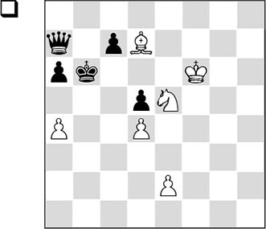
Study by Andrew, 1925
Clearly, White has the advantage, in spite of the material disadvantage of two pieces versus queen. The black king is badly placed, but especially the queen is in a tight spot.
With his following move White forces both black pieces into even greater inactivity.
1.a5+! ♔b7
Forced, since after 1…♔xa5 2.♘c6+ ♔b6 3.♘xa7 ♔xa7, White wins the ensuing ending easily with 4.♔e5.
2.♘c6
The queen is literally and figuratively driven into a corner.
2…♕a8
As we can also see elsewhere in this book, at the moment when a piece is out of play, the opponent will try to bring it back into the game again. Such is the case here: Black threatens to escape with his queen, after which he could cash in on his material advantage. But White has a fantastic parade up his sleeve:
3.♔g7!!
And Black is in zugzwang. The only thing he can do is give the queen for only one of White’s minor pieces.
Solving studies might just be the best remedy for a horrible defeat. Especially if you manage to find the solution by yourself, this will boost your confidence. Besides, it may also make you remember why you are playing chess in the first place!
In the above study, we saw something of instructive value. A piece was out of play, and White exploited this detail aptly. Steinitz already told us that a piece which is not on the battlefield, is out of play. With the battlefield, we mean the part of the board where the battle takes place. This forces the other side to act energetically, if he wants to take profit from this temporary advantage. The following game aptly illustrates this battle method.
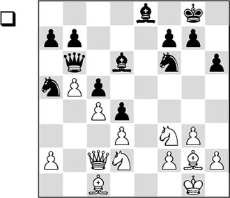
About this position, Kotov writes in his book Play like a Grandmaster: ‘Black’s position looks quite reasonable, but it has one outstanding defect. His knight at a5 is badly placed and has little prospect of getting to a good square. White plans to exploit this by playing all his pieces to the K-side in order to work with an extra piece there.’
In his other book, Think like a Grandmaster, Kotov describes his line of thinking in more detail: ‘In deciding on a plan, or more accurately how to continue from here, I set myself an aim that was not very complicated, but was strategically correct. I argued that I could not exploit the knight’s position directly, so I would have to exploit the fact that it was cut off from the kingside, as in attacking the king I would have an extra piece at my disposal compared to the defender. Simple and clear. Now follow how this important positional factor was used in the game.’
Whatever the case may be, Kotov is able to comfortably carry out his above-mentioned plan, and his assessment is proved correct.
1.♘h4!
With this knight sortie White gives the signal for the storm that is to break out on the kingside.
1…a6 2.a4 ♕a7 3.♘f5 ♗f8 4.♘e4
White is careful with piece exchanges, but he is prepared to exchange these knights. The black knight on f6 is an important defender, and at the same time White vacates the e4-square for his bishop.
4…♘xe4 5.♗xe4 b6
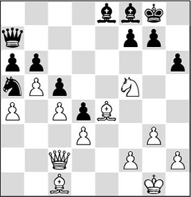
6.♕d1!
The minor pieces are already more or less pointed at the black king – now only the queen has to join them.
6…axb5 7.axb5 ♗d7 8.♕h5 ♗e6
Black cannot permit himself the exchange 8…♗xf5; for example, 9.♕xf5 g6 10.♕d5 ♔g7 11.♗f4 does not inspire much confidence. White’s powerful bishop pair can be deployed over the entire board.
9.♗f4
Both players overlook a curious tactical intermezzo. The right move was 9.♔g2, to leave the vulnerable back rank with his king.
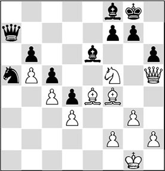
9…♘b3?!
Finally, Black’s unfortunate knight puts in an appearance. However, it is too late. For the time being, the knight only attacks ‘empty’ squares, which White has abandoned a few moves ago, whereas White has a concrete target: the black king. At the moment, the knight is not capable of operating in the vicinity of White’s king, mainly because the white army is fully mobilized.
However, there was a hidden possibility with which Black could have turned things around: 9…♘xc4! 10.dxc4 ♕a1+ 11.♔g2 ♗xc4, and suddenly Black has launched a strong attack on the white king. The pressure that White exerts on the black king is just enough to allow him to escape with perpetual check: 12.♘xh6+ (certainly not 12.h4??, as 12…♕f1+ 13.♔h2 ♕xf2+ 14.♗g2 g6 15.♘xh6+ ♗xh6 16.♕xh6 ♗d5 is winning for Black) 12…gxh6 13.♕g4+ ♗g7 14.♕c8+ ♗f8 15.♕g4+ with move repetition.
10.♕d1
White is not afraid to enter an endgame. By the way, here also, 10.♔g2 deserved attention.
10…♕a2
After 10…♕a1 11.♕xa1 ♘xa1 12.♗c7, pawn b6 will be lost, after which Black is left with a hopeless endgame.
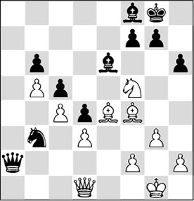
11.h4
Kotov is calling up reinforcements in order to further besiege the black king’s position.
11…♘a1
The knight is still wandering aimlessly in no man’s land.
12.h5 ♘c2 13.♗e5
Slowly but surely, White manoeuvres his pieces in front of Black’s rather deserted king’s position. The threats have already become so strong that the black player no longer has a defence against them.
13…♕b2
After a move like 13…♘a3, there follows 14.♕g4 ♕d2 15.♗f4 ♕e1+ 16.♔g2, which would already force an immediate decision.
14.♗c7
The problem for Black is not only the menacing attack on his king, but also the weak b6-pawn on the queenside. By the way, White could have made this bishop move one move earlier. However, the immediate attempt to catch Black napping with 14.♕g4 did have a drawback: with 14…♕c1+ 15.♔h2 ♕d2 Black can hold for the time being.
14…♘a3 15.♕g4
The white player still keeps confidence in his attack on the king. There was no argument against 15.♗xb6 either.
15…♕c1+ 16.♔g2
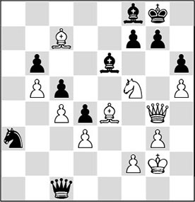
16…♘b1
Kotov here writes that ‘such moves are clear evidence that a catastrophe is near’.
Bronstein, who comments on this game in his invaluable tournament book, cannot help expressing a little irony: ‘The knight wanders forlornly about the corner of the board, as if trying to perform the well-known Knight’s Tour, while White methodically increases the pressure on the black king’s position.’
Incidentally, also after 16…♘c2 17.♕e2, there would have been no salvation for Black.
17.♗f4 ♘d2?
A grave mistake, which ends the game immediately. The following beautiful and instructive attacking sequence, starting after 17…♕c2 18.♘xh6+ ♔h8, proves how dangerous White’s initiative already was:
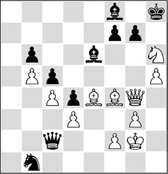
19.♘xf7+! (a surprising knight sacrifice) 19…♗xf7 20.♕f5 ♗g8 21.h6!.
18.♕e2
1-0
Winning the piece is now the simplest way to enforce capitulation.
The crystal-clear strategy displayed by Kotov in this game appealed to me when I saw it for the first time. He regards the black knight on a5 as a liability, and on that basis he transfers all his pieces as quickly as possible to the other wing, convinced that the preponderance of one extra piece should produce something concrete for him. Thus, he labelled the kingside as the battlefield. In the game Smyslov-Fischer in Chapter 20, we will witness a similar strategy.
In any case, it is clear that this concept is applicable in more than one type of position. The following game illustrates this.
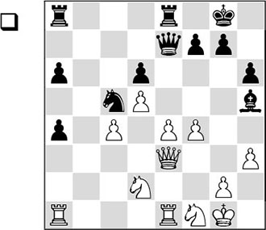
Capablanca decides to exile the black bishop to a faraway place.
1.g4! ♗g6 2.f5 ♗h7
Here Capablanca probably thought: ‘Right, that piece won’t do anything on that side of the board for the next twenty moves’.
3.♘g3 ♕e5 4.♔g2 ♖ab8 5.♖ab1
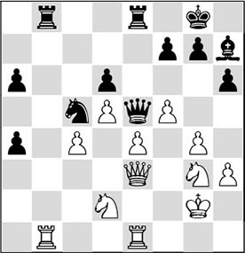
5…f6
It won’t do any harm to spend some time studying the consequences of this pawn move. In the long run Black hopes to ‘bring the h7-bishop to life’ with the manoeuvre …♗h7-g8-f7-e8, after which it will rejoin the battle on the queenside. But for this he will have to make a huge concession: the surrender of the e6-square gives White a new angle to handle this position. Black cannot prevent a white knight from jumping to this square, where it will be so dominant that it must be exchanged. Then the protected passed pawn on e6 will be the new weapon in White’s arsenal.
6.♘f3 ♖b2+ 7.♖xb2 ♕xb2+ 8.♖e2 ♕b3
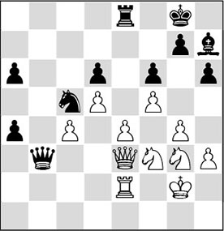
At first sight, Black is not doing so badly. He has a strong knight on c5, the only open file is in his possession, and he has an a-pawn that may give White some headaches. Capablanca himself indicated that the black pieces have more freedom than the white ones. Moreover, White has weak pawns on c4 and e4, and if there were no other factors playing a role here, White would not be in good shape.
Nevertheless, Black is on the verge of losing. On the queenside he is playing practically with a piece less, as his bishop on h7 cannot assist its fellow pieces on the battlefield. And this sole factor is of overriding importance here.
9.♘d4!
White gives up the c-pawn in order to activate his pieces. The knight strives for the e6-square, as we predicted.
9…♕xe3
Black could hardly go for 9…♕xc4 10.♘e6 ♖b8 11.♘xc5 dxc5 12.d6, when the white d-pawn becomes much too dangerous.
10.♖xe3 ♖b8 11.♖c3 ♔f7 12.♔f3 ♖b2 13.♘ge2 ♗g8
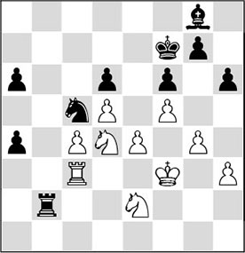
14.♘e6
White places his knight on the coveted square.
14…♘b3
After the exchange of knights, with a protected passed white pawn on e6, the black bishop would have no hope of ever being able to make an appearance on the queenside.
With 14…♘xe4 Black would be jumping from the frying pan into the fire: after 15.♔xe4 ♖xe2+ 16.♔d3 ♖h2 17.♔d4 h5 (exchanging rooks with 17…♖d2+ 18.♖d3 ♖xd3+ 19.♔xd3 also results in a hopeless endgame) 18.c5, White breaks through, and soon he will manage to escort a pawn to the other side. Note how hard it is for the black bishop to join the battle.
15.c5!
Here also, White comes up with this breakthrough.
15…dxc5 16.♘xc5 ♘d2+
After 16…♘xc5, Black will soon be in insurmountable trouble: 17.♖xc5 ♖b3+ 18.♔f4 a3 19.♖a5, and the white pieces cooperate much better than the black ones.
17.♔f2
White must remain on his guard. After 17.♔e3? a3, 18.♖xa3? is not possible in view of 18…♘c4+.
17…♔e7 18.♔e1 ♘b1 19.♖d3
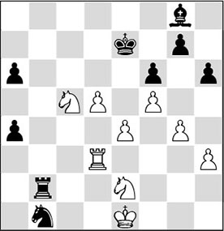
19…a3?
Black does not wish to part with his foremost a-pawn, as then he would have no counterplay left at all. As a consequence, White’s d-pawn now also becomes a killer, which will soon be Black’s undoing. But also after 19…♔d6 20.♘xa4 ♖b4 21.♘ac3 ♘xc3 22.♘xc3, White would slowly make progress. Still, in that case Black could still have put up some tough resistance.
20.d6+ ♔d8 21.♘d4
The bishop on g8 has actually obtained an open diagonal, but it will not give Black much pleasure.
21…♖b6
Also after 21…a2? 22.♘c6+ ♔c8 23.d7+ ♔c7 24.d8♕+, Black is finished.
22.♘de6+
Even stronger was 22.d7.
22…♗xe6
The bishop breathes its last. White’s two connected passed pawns decide the battle.
23.fxe6
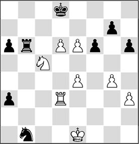
23…♖b8
Now 23…a2 would be too late after 24.e7+ ♔e8 25.d7+ ♔xe7 26.d8♕+, and Black will be mated.
24.e7+ ♔e8 25.♘xa6
And Black surrendered.
After 25…a2 26.♘xb8 a1♕ 27.d7+ ♔xe7 28.d8♕+ ♔f7 29.♕d5+ forces the mate.
Coincidentally, that strong e6-square from the previous fragment also plays the leading part in another game by Capablanca. The similarity between both games is striking.
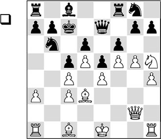
1.gxf6 gxf6 2.♘g7!
In this way, White brings the knight to the strong e6-square, where it will be just as dominating as in the previous example.
2…♗d7 3.h5
First White slowly strengthens his position.
3…♖ac8 4.h6 ♔b8 5.♖g1 ♖f7 6.♖b1 ♕f8 7.♗e2 ♔a8 8.♗h5 ♖e7 9.♕a2 ♕d8 10.♗d2 ♘a4 11.♕b3 ♘b6 12.a4
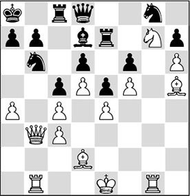
12…♖b8
It is too dangerous for Black to hand his opponent an open file in front of his king. After 12…♗xa4 13.♕a2 ♗d7, the strong 14.♘e6 ♗xe6 15.fxe6 follows, and Black is tied hand and foot. Apart from the latent threats along the a- and b-file, ♗h5-f7 is Black’s first worry.
13.a5 ♘c8 14.♕a2 ♕f8 15.♗e3 b6 16.a6 ♕d8 17.♔d2 ♕f8 18.♖b2 ♕d8 19.♕b1 b5 20.cxb5 ♘b6 21.♕a2 c4 22.♕a3 ♕c7 23.♔c1 ♖f8 24.♖bg2 ♕b8 25.♕b4 ♖d8 26.♖g3 ♖f8
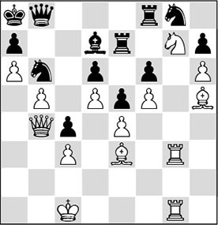
Now that Black is completely tied up, White finishes the job in style.
27.♘e6!
Finally, Capablanca plays this move, which was hanging over Black’s head like the Sword of Damocles. The knight threatens to spread death and destruction in the black camp and therefore has to be eliminated right away.
27…♗xe6
The slaughter after 27…♖c8 28.♗xb6! axb6 is illustrative: 29.a7! ♕xa7 30.♔b2, and White wins.
Even worse is 28…♗xe6: 29.fxe6 axb6, and now White has two ways to win:
A) 30.♖g7 ♔a7 31.♖xe7+ ♘xe7 32.♖g7 ♕c7 33.♖xh7;
B) Even after 30.♖xg8, Black is completely finished, although this would require some heavy-duty calculation: 30…♖xg8 31.♖xg8 ♕xg8 32.♕xd6 ♕g1+ 33.♔b2 ♕f2+ 34.♔a3 ♕c5+ 35.♕xc5 bxc5 36.♗f7, and the white pawn avalanche is irresistible.
28.dxe6 ♖c7
There is no decent defence left.
29.♕xd6 ♘e7 30.♖d1
1-0
17.2 Implementing a long-term plan
It will hopefully be clear by now that even a slightly misplaced piece can backfire on you in a game. That it can even cost you the game is less obvious. During my search for examples the following incident came to my mind.
When I had qualified for the first time for the Dutch Championship in 1981, I kept my eyes and ears open during my first encounter with the then top Dutch players. I tried to watch as many post-mortems as possible to increase my understanding. I remember drawing up a chair at the post-mortem of the following game, and witnessing how the Dutch master Rob Hartoch was being made something of a laughing-stock by the greatest loudmouth among the chess players in our country: the late grandmaster Jan Hein Donner.
In his youth Hartoch had been considered the crown prince of Dutch chess. Already at the age of fifteen he was of master strength thanks to his good strategic understanding, and his fine shared 2nd place in the junior World Championship of 1965 seemed to be the signal of a bright future.
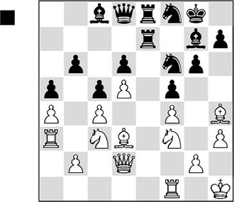
In this position, Black has conceived the plan of exploiting the weak b4-square.
1…♘8d7 2.♖g1 ♘b8 3.♖aa1 ♘a6 4.♖af1 ♘b4 5.♗b1
After a time-consuming manoeuvre, the knight has arrived on b4, where it is doing practically nothing. All White’s pieces are on the kingside, and he has his hands free to build up a dangerous initiative there.
5…♔h8
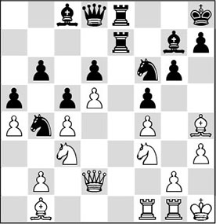
Here Donner started to make fun of Black’s action. With a certain disdain he uttered words like: ‘The battle takes place on the kingside and now you’re going to take a knight from its defensive post on f8 and simply put it out of play on the other side of the board!’
6.♘h2?!
But Donner hardly manages to make good use of the opportunity himself. Probably he should have played 6.♖e1.
6…♖e3 7.♗f2 ♖3e7 8.g4 ♖f7
Here 8…♗a6 9.b3 ♘e4 10.♘xe4 fxe4 would have given Black some counterplay.
9.gxf5 ♗xf5 10.♗xf5 gxf5 11.♘f3 h6 12.♗h4 ♕d7
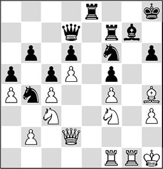
Unexpectedly, a draw was agreed. White is clearly better after 13.♗xf6 ♖xf6 14.♖g3 ♔h7 15.♖fg1 ♖f7 16.♖g6, followed by the knight manoeuvre from c3 to g3, after which Black would pay the price for misplacing the knight on b4.
The strange thing is that Hartoch had already learned this lesson from an earlier confrontation with the same opponent.
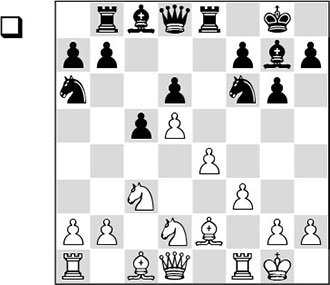
A well-known position from the Benoni, the black player’s beloved opening.
1.a4
White weakens the b4-square and invites his opponent to play his knight to this ‘beautiful’ square. But actually, Donner is hoping that the knight will be out of play there, as soon as the struggle is concentrated on the kingside. And that is exactly what he is going to do here!
1…♘b4 2.♘c4 ♗f8
If a Benoni player has to make such moves, this is generally a bad sign.
3.♗g5 h6 4.♗e3 b6 5.♕d2 ♔h7 6.g4 ♗a6
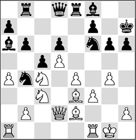
7.♘b5!
He does not allow his beautiful knight on c4 to be exchanged for a bishop that is doing nothing.
7…♕d7 8.♗f4 ♗xb5 9.axb5 ♕c7
Black can never take on b5 in view of the discovered attack ♘xd6.
10.♗g3 ♘d7
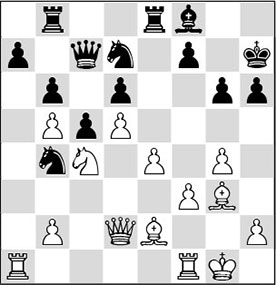
11.♖a3!
A deep move. Not only does Donner make a doubling on the a-file possible, but most of all he hopes to employ the rook along the third rank at the moment when he takes action on the kingside.
11…♘e5?
Panic. Black should have ‘passed’ with 11…♖a8, although then too he would have had a hard time of it.
12.♘xe5 dxe5 13.f4
Thus White has obtained the target he needed to open files, diagonals and ranks.
13…♗d6 14.♖af3
14.fxe5 ♗xe5 15.♖af3 was slightly more accurate.
14…exf4 15.♗xf4
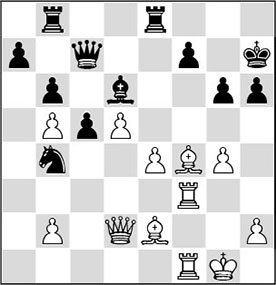
15…♖xe4
After this new mistake, the game is immediately over. But also after 15…♗xf4 16.♖xf4 ♖f8 17.d6 ♕d7 18.♗c4!,
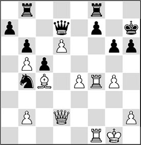
Analysis diagram
Black would not have survived the white initiative. In this line, too, the absence of the black knight from the kingside is heavily felt.
16.♗xd6 ♕xd6 17.♖xf7+ ♔g8 18.♕xh6
1-0
This leads us to the question how we are to exploit such an advantage. After a piece has been misplaced, the other player should point his arrows at the other wing. As a rule, he does not have to fear piece exchanges.
In the following game, a bishop is rendered inactive for a large part of the game. It is highly instructive how the great strategist Petrosian manages to maintain this advantage until deep in the endgame, and to convert it into other advantages.
RE 25.10 (A05)
1.♘f3 ♘f6 2.g3 d5 3.♗g2 ♗f5 4.d3 e6 5.♘bd2 h6 6.0-0 ♗c5
Normally 6. … ♗e7 is played here.
7.♕e1 0-0 8.e4

8…dxe4?
Black voluntarily releases the tension, which is contrary to the logic of this position. With his opening set-up Black has established a strong point on d5, which he now gives up for nothing.
9.♘xe4 ♘xe4
Black has to exchange on e4, as 9…♗e7 10.♘xf6+ ♗xf6 11.♘h4! would not be a picnic for him. But if he had known what was awaiting him in this game, then he would have captured with the bishop on e4 without further ado, even though this would have cost him the bishop pair.
10.dxe4 ♗h7

Just like in the previous fragment, this bishop is locked up and condemned to watch behind bars the spectacle taking place elsewhere. Petrosian understands like no other that in the following, he has to maintain the pawn on e4 at all cost!
11.b4!
White wins time and space on the queenside. It is clear that the initiative has gone over to Petrosian.
11…♗e7 12.♗b2 ♘a6
Here the knight is on the wrong track. There was more to be said for 12…♘d7, followed by …c6 and …♕c7.
13.a3 c6 14.♖d1 ♕c8 15.c4 ♘c7 16.♕c3
The opening phase is over, and White has emerged from it with a clear advantage. He has more space and can choose between several interesting plans.
16…♗f6
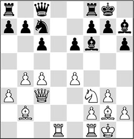
17.♘e5!
Would you have played that one? Or was the temptation to play 17.e5 too great for you? As we said before, this would indeed have been a strategic mistake, bringing the confined bishop on h7 back to life.
17…♖d8
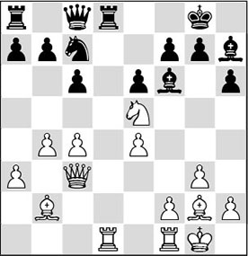
18.♗f3?!
Now that Black has released his hold of the f7-point, Petrosian tries to attack it in order to provoke weaknesses. However, Bronstein indicates a plan that would have been more to the point: 18.♕c1!, intending c4-c5 followed by ♘e5-c4, so as to get more grip on the d-file.
Also interesting is 18.♕f3!?, intending to start combinational play. Now that the black queen is slightly tucked away on c8, the threat of 19.♘xf7 suddenly becomes acute. By the way, this possibility would have represented a complete change from the original concept.
18…♘e8!
Black is defending adequately. To the planned 19.♗h5, he could now answer 19…♕c7!, after which the strike on f7 is not possible.
19.♖xd8 ♕xd8 20.♖d1 ♕c7 21.c5
Petrosian reverts to the correct plan after all.
21…a5?!
Better was the immediate 21…♖d8, since the text move gives White the opportunity to gain a tempo for the regrouping of his pieces.
22.♗g2 axb4 23.axb4 ♖d8
Black now realizes that the a-file is of no use to him. After 23…♖a2 24.f4, followed by 25.♕b3, the rook will have to return home empty-handed.
24.♖xd8 ♕xd8 25.♕c2
In this way, White keeps all the squares on the d-file under control.
25…♘c7
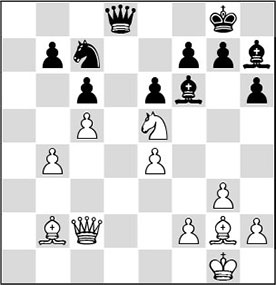
26.♗f1?!
Petrosian is not very fortunate every time he touches his light-squared bishop in this game. Here, he would have done better to cast aside his urge to handle the entire game with exquisite subtlety. The correct approach was 26.f3!, in order to give the pawn on e4 permanent protection and to definitively box in Black’s bishop on h7. After 26…♘b5 White’s best reply is 27.♘c4, maintaining the advantage.
26…♘b5
Threatening to interrupt the communication between the white lines with 27…♘d4.
27.f4
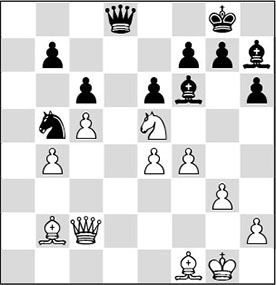
27…♔f8!?
Here Black could have complicated matters with 27…♘d4, for which Petrosian had prepared the following: 28.♕d1! ♘b5 29.♕xd8+ ♗xd8 30.♗d3, and White has excellent chances in this endgame. A better alternative for Black is 27…♕a8!, after which he threatens to make an annoying entrance on the a-file, while White has to keep protecting the pawn on e4.
28.♔f2 ♗xe5?
Although the knight has been a thorn in Black’s flesh for several moves, the cure is worse than the disease. From here on, the white bishop pair will reign supreme.
29.♗xe5 f6 30.♗b2 ♔e7 31.♗c4 ♗g6 32.♔e3
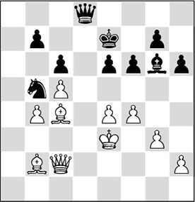
32…♗f7
With some effort, Euwe has managed to give his bishop a function. However, the concessions he has been forced to make to achieve this have put him in a passive position.
33.g4!
Now that Black has given up his dark-squared bishop, White prepares to attack the long diagonal. If the dark squares are opened up, Black will have no answer to the invasion at hand.
33…♕c7 34.e5!
Now we see why White had to start with g2-g4: …f6-f5 has been ruled out.
34…♕d8 35.exf6+ gxf6
The dark-squared bishop is gaining in strength.
36.h4
White could have made a direct attempt to strike with 36.♗xb5 cxb5 37.♕c3, after which Black has to give a pawn with 37…♔e8 38.♕xf6 ♕xf6 39.♗xf6. Petrosian rightly fears that this opposite-coloured bishop endgame cannot be won.
36…♘c7
In Petrosian’s Best Games 1946-63, P.H. Clarke indicates that Black could have put up more resistance with 36…♕g8.
37.♕c3
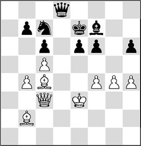
37…♘d5+?!
Euwe is desperately looking for counterchances. After 37…♘e8 38.♗b3, he could only have watched how White would convert his advantage into a win.
38.♗xd5
White now deliberately opts for an attack with opposite-coloured bishops. In spite of the reduced material, his winning chances have increased.
38…♕xd5 39.♕xf6+ ♔e8 40.♕h8+ ♔d7 41.♕g7
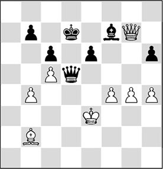
Here the game was adjourned, and during the break, Petrosian searched for the right set-up for his pieces. It is clear that the only thing he has to watch out for is that Black may force perpetual check in one way or another.
41…♔e8 42.♗f6 ♕b3+ 43.♗c3 ♕d1 44.♕h8+ ♔d7 45.♕b8 ♕c1+
The crucial question is how White should react to 45…♕g1+. With 46.♔d2 ♕f2+ 47.♔d1 ♕f1+ 48.♔c2 ♕e2+ 49.♗d2, he reaches the position that also arises in the game.
46.♗d2 ♕g1+ 47.♔d3 ♕f1+
Black cannot activate his bishop with 47…♗g6+, since after 48.f5 exf5 49.♕d6+, he would lose it.
48.♔c2
The queen is forced to give assistance to the defence from a passive square.
48…♕a6
After 48…♕c4+ 49.♔b2 ♕d4+ 50.♗c3 ♕f2+ 51.♔a3, the annoying checks are over.
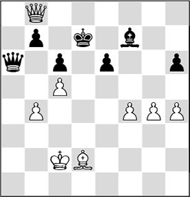
49.h5!
White seems to make a running gag of his endeavour to give the bishop on f7 as little space as possible. At the same time he fixes the black h-pawn on a dark square, so that later on he can comfortably exchange queens, since in the opposite-coloured bishops endgame the pawn on h6 will be an easy prey for his bishop. The fact that Black can now start a new series of checks cannot hurt White in the least. He has accurately puzzled out that his bishop provides a good shield against the shower of checks.
49…♕a2+ 50.♔d3 ♕b1+ 51.♔e2 ♕e4+ 52.♔f2 ♕d4+ 53.♗e3 ♕xb4
After 53…♕b2+ 54.♔g3, an ‘echo’ of the variation given at move 48 ensues, where the white king escaped via a3.
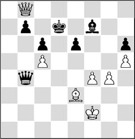
54.♕f8!
So far Petrosian had analysed everything during the intermission. He had seen that the black queen has to return to f6, where it is condemned to play a passive role, giving White free hand to finish off without risk.
54…♕b2+ 55.♔g3 ♕f6 56.♕d6+
Petrosian’s play was always characterized by the motto ‘safety first’. Also possible was a liquidation to a queen ending with 56.♗d4 ♕xd4 57.♕xf7+ ♔d8 58.♕g8+ ♔e7 59.♕h7+ ♔e8 60.♕xh6, which should be winning since White’s h-pawn has advanced quite far already.
56…♔c8 57.♗d4
The key to White’s winning plan. Black is forced to exchange queens, after which White’s bishop is superior to its black colleague.
57…♕d8 58.♕xd8+
Finally he is allowed to liquidate to the ending he had in mind.
58…♔xd8 59.♗g7 ♔c7 60.♗xh6 b6 61.cxb6+ ♔xb6
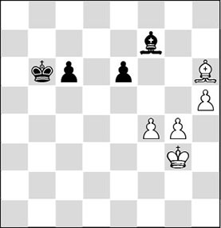
62.♔h4
And here Euwe had seen enough. The white pawn mass on the kingside cannot be stopped any longer.
Exercises
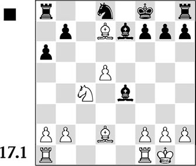
White is a nice pawn up. But, even worse for Black: his pieces are bunched up and do not cooperate well. However, a winning position still has to be won. White’s last move was ♘e5-c4, to defend the d5-pawn by a tactic. But it also contains a trap. Which one?
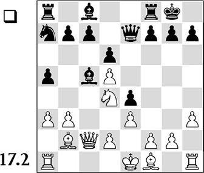
In this position, determine on which side of the board White should play, and find a plan that corresponds with this.

It is clear that Black is wrestling with a lag in development, as a consequence of which a few of his pieces (♖a8 and, especially, ♗c8) are still doing nothing. Which strategy should White pursue to take advantage of this lack in activity of his opponent?
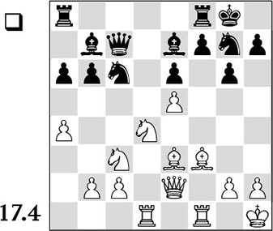
At first sight, Black seems to be fully in the game. However, White has a forced liquidation at his disposal, which yields him a virtually decisive endgame advantage. If you see which of the opponent’s pieces should be restricted, you will have little trouble finding the variation in its entirety.